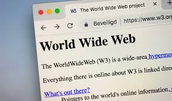

A história da internet teve início com a Arpanet, uma rede de troca de informações
que havia sido
desenvolvida para conectar instalações de pesquisas e militares com o Pentágono, nos Estados Unidos, na década
de 1960.
O crescimento dessa rede permitiu que seu uso se estendesse para fins privados e comerciais. A
internet chegou ao Brasil somente no final da década de 1980.
A internet é atualmente o maior meio de comunicação utilizado planeta, com mais de 5 bilhões de usuários.
Por
ela, é possível enviar mensagens instantaneamente, movimentar dinheiro em contas bancárias, comprar mercadorias,
acessar redes sociais, fazer pesquisas etc
O HTML foi criado por um pesquisador do CERN, Tim Berners-Lee em 1991, com o objetivo de facilitar o
compartilhamento de pesquisas entre ele e seu grupo de colegas.
De lá para cá houve muita evolução da
linguagem
que se encontra hoje na sua quinta versão
A web, inicialmente, foi desenvolvida com o objetivo de compartilhar informações entre cientistas de
universidades e institutos de todo o mundo, atendendo demandas e facilitando processos.
Hoje, com uma
diversidade de conteúdo e informações, pode ser usada por todos, atendendo a diferentes objetivos.
o The Project, a primeira página da Internet, criado em 06 de agosto de 1991, por Tim Berners-Lee, cientista
britanico e criador do world wide web conhecido como WWW,
O primeiro site do mundo, foi dedicado ao projeto
da World Wide Web e foi hospedado no computador NeXT, de Berners-Lee. O objetivo era oferecer uma explicação
sobre o que a World Wide Web era, como alguém poderia criar um navegador, como instalar e como configurar um
servidor web.

Tim Berners-Lee (O Pai da Web)
O cientista da computação britânico Tim Berners-Lee é frequentemente
considerado o "pai da internet" por ter inventado a World Wide Web (WWW)
Vint Cerf e Bob Kahn (Os Pais da Internet)
Vinton Cerf e Robert "Bob" Kahn são considerados os "pais da
internet" por terem desenvolvido os protocolos fundamentais de comunicação, o TCP/IP
Hedy Lamarr (Pioneira da Conectividade)
Embora mais conhecida como atriz de Hollywood, Hedy Lamarr foi uma
inventora brilhante que, junto com George Antheil, desenvolveu um sistema de comunicações secretas durante a
Segunda Guerra Mundial baseada na
"tecnologia de salto de frequência"
Paul Baran e Leonard Kleinrock (Teoria da Comutação de Pacotes)
Paul Baran: Engenheiro que concebeu a ideia de
"comutação de pacotes", que divide as mensagens em blocos menores antes de enviá-las, tornando a rede mais
robusta
Leonard Kleinrock: Cientista que desenvolveu a teoria matemática subjacente à comutação de pacotes e
supervisionou a primeira transmissão de mensagem na ARPANET em 1969
Larry Page e Sergey Brin (Organizadores da Informação)
undadores do Google, desenvolveram um algoritmo de
busca revolucionário (PageRank) que mudou drasticamente a forma como as pessoas encontram informações na web.
Beranek and Newman (BBN)
A BBN foi fundamental na fase inicial. Em 1969, esta empresa de Cambridge,
Massachusetts, recebeu o contrato da ARPA para construir os Interface Message Processors (IMPs)
os primeiros
"roteadores" que permitiram a criação da ARPANET. A BBN desenvolveu o hardware e software necessários
para
conectar os computadores da UCLA, Stanford, UCSB e Utah.
IBM e DEC
Na fase da ARPANET, computadores dessas empresas foram os primeiros a serem interconectados.
IBM: O modelo IBM 360/75 foi um dos primeiros hosts da ARPANET.
DEC: Os computadores PDP-10, da DEC, eram
amplamente utilizados em universidades e desempenharam um papel importante como nodos de rede na ARPANET
Cisco systems
Fundada nos anos 80, a Cisco foi crucial para a expansão da internet comercial. A empresa
popularizou o roteador multiprotocolo, tecnologia que permitiu conectar diferentes
redes de computadores,
formando a espinha dorsal (backbone) da internet moderna
Netscape Communications
A Netscape foi a empresa responsável por trazer a internet ao público geral. Em 1994,
lançou o Netscape Navigator, o primeiro navegador comercial de grande sucesso.
Ele tornou a World Wide Web,
criada por Tim Berners-Lee no CERN, navegável e amigável, dominando o mercado nos primórdios da web
Microsoft
A Microsoft teve um papel crucial na popularização da internet ao integrar o Internet Explorer ao
sistema operacional Windows nos anos 90, tornando o acesso à rede onipresente em computadores pessoais.
Além
disso, o desenvolvimento de servidores e linguagens de programação (como .NET) consolidou sua infraestrutura
Google, Amazon e Yahoo!
Empresas que surgiram nos anos 90 e 2000, essenciais para organizar e comercializar a
web
Yahoo! e AltaVista (Digital Equipment Corporation): Foram os primeiros grandes motores de busca que
estruturaram a web.
Google: Revolucionou a forma de encontrar informações com seu algoritmo de busca e, posteriormente, com a
publicidade online (AdWords).
Amazon: Pioneira no e-commerce, demonstrando a viabilidade econômica da web.
| ano | nomes | oque aconteceu |
|---|---|---|
| 1969 | ARPANET (BBN/DARPA) | cria a primeira rede de pacotes |
| Década de 1970 | TCP/IP (Cerf/Kahn) | estabelece a linguagem padrão |
| 1983 | Nascimento "oficial" da internet | a adoção padrão do TCP/IP |
| 1989-1991 | Tim Berners-Lee | cria a World Wide Web no CERN |
| 1993-1994 | Mosaic e Netscape Navigator | popularizam a Web |